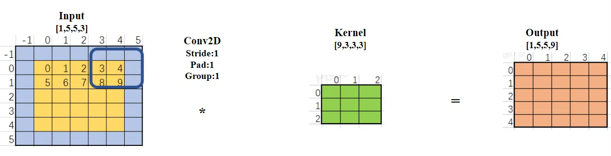
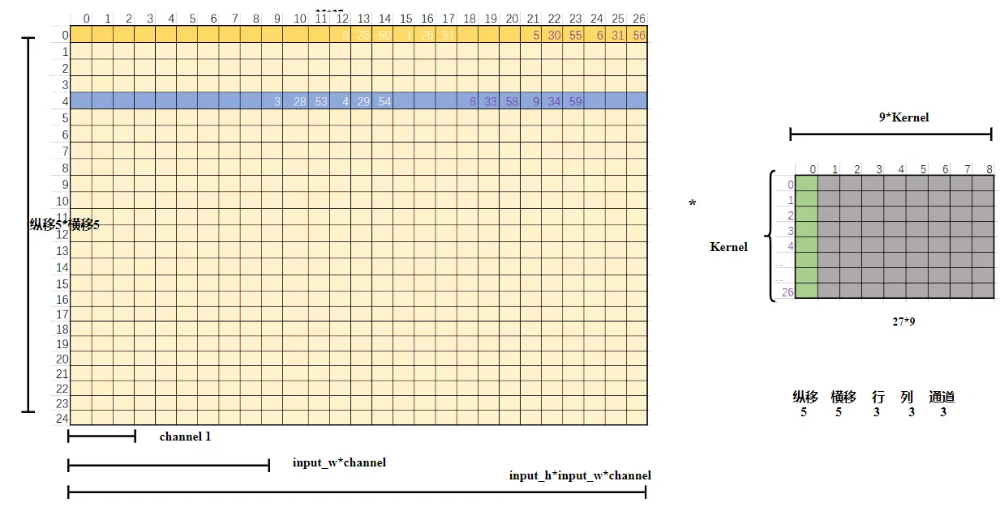
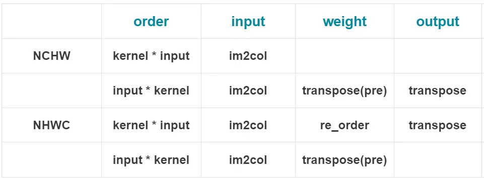

本文为最基本的 Im2Col 算法的原理及实现。
【Im2Col】卷积加速算法 NHWC 【1】中已经讲了在输入和输出都是 nchw 排布下 Im2Col 算法的实现方式。常见的 tensor 输入有 NCHW 和 NHWC 两种内存排布方式，不同的排布方式各有优劣。排布方式不同，Im2Col 也有区别，本篇主要是在 NHWC 内存排布情况下的 Im2Col 算法原理和基本实现。
慌乱的时候全是破绽，冷静下来，能够找到对方的破绽。
------ 大家好啊 我是 暮冬 Z 羡慕
# 两种内存排布
卷积神经网络（CNN）的输入数据布局主要有两种标准：NCHW（通道、高度、宽度）和 NHWC（高度、宽度、通道）。主要深度学习框架对这两种布局的支持情况如下：
PyTorch：主要采用 NCHW 格式。这是 PyTorch 在大多数情况下的默认布局，尤其是在涉及 GPU 计算时。
Caffe：采用 NCHW 格式。Caffe 框架倾向于使用这种通道优先的布局。
TensorFlow：默认使用 NHWC 格式，特别是在早期版本中，这是由于 TensorFlow 最初设计时主要针对 CPU 进行优化，NHWC 布局在这种场景下有更好的内存访问局部性。
Keras：Keras 本身是一个高级 API，集成到 Tensorflow 之后跟随 tensorflow 的内存排布方式。
# 内存排布的优缺点
NCHW 格式的优点：
-
1. 在 GPU 中计算卷积时，比 NHWC 要快 2.5 倍左右。这是因为在 GPU 中，NCHW 格式的数据布局更符合 GPU 的内存访问模式和计算方式。
-
2.NCHW 格式更适合那些需要对每个通道单独做运算的操作，比如 “MaxPooling”。这是因为 NCHW 格式的同一通道的像素值连续排布，使得对每个通道的数据可以更高效地进行运算。
NCHW 格式的缺点：
-
1.NCHW 格式需要把所有通道的数据都读取到，才能进行运算，因此在计算时需要的存储更多。这可能会限制其在一些具有限制的硬件环境下的应用。
-
2.NCHW 格式的访存与计算的控制逻辑相对简单，这使得在一些需要精细控制访存和计算的场景下，可能不是最佳的选择。
NHWC 格式的优点：
-
1.NHWC 格式的访存局部性更好。这意味着每三个输入像素就可以得到一个输出像素，因此在一些特定的计算操作中，可以更高效地利用硬件资源。
-
2.NHWC 格式更适合那些需要对不同通道的同一像素做某种运算的操作，比如 “Conv1x1”。这是因为 NHWC 格式的不同通道中的同一位置元素顺序存储，使得对不同通道的数据可以进行更高效的运算。
-
3.NHWC 格式在早期的 CPU 开发中应用较多，因此对于主要基于 CPU 开发的深度学习框架和算法，NHWC 格式可能更受欢迎。
NHWC 格式的缺点：
-
1. 在使用 GPU 进行计算加速时，NHWC 格式不如 NCHW 格式高效。这是因为 NCHW 格式更符合 GPU 的内存访问模式和计算方式。
-
2. 对于一些需要精细控制访存和计算的场景，NHWC 格式的控制逻辑可能相对复杂一些。
# Im2Col 变换
Im2col 算法是将卷积转换成两个 2D 矩阵乘运算。(kernel_2D * input_2D) 与 (input_2D * kernel_2D) 矩阵乘的顺序不同，所需要的 4D 到 2D 变换也不同，我们先将 input_2D 放在前面，也就是 (input_2D * kernel_2D)，最后再讨论 kernel_2D 放在前面还是后面的区别。
依然采用下面这个简单的卷积样例，输入 tensor 按照 nhwc 排布，所以是一个 3 通道 5*5 的 input tensor。卷积核有 9 个，pad 为 1，因此输出是【1，5，5，9】。

直接展开 2D 形式，两个矩阵形式如下。

上图右边是权重 kernel_2D
-
1. 原 kernel_4D 维度为【9，3，3，3】，拥有 9 个 kernel，将其第一个 kernel 按照【C_in, Kh, Kw】的顺序展成一列，也就是第一列绿色部分，共有 27 个数。
-
2. 依次将余下 8 个 kernel 按照相同的方式展成一列，就得到了 kernel_2D。
-
3.kernel_2D 维度为【27，9】
从内存排布上来看，需要将原本的 kernel_4D 进行数据重排。
上图左边是输入 input_2D
-
1. 矩阵乘是 行 * 列；kernel_2D 一列代表一个卷积核【C_in, Kh, Kw】；所以 input_2D 的一行是 “一个卷积核滑动窗口” 对应的数据，也就是 27 个。
-
2. 第一行橘黄色部分是第一个滑动窗口对应的数据，未填的数代表 Pad。
-
3. 滑动窗口需要纵移 5 次，每次纵移需要横移 5 次，因此有 5*5 行数据。
-
4. 例如第 5 行蓝色是滑动窗口在图一中向右移动到第 5 格，蓝色格子时对应的数据。由于 Input_2D 的维度是 NHWC，也就是说图一中 “0，25，50” 三个数在内存中是相邻的（分别位于同一个 HW 位置的第一、第二、第三通道）。为了减少数据的搬运，这些连续的数被搬运到一起。即：图一中 3*3 的蓝色滑动窗口中前 3 个都对应 Pad，所以图二第 5 行蓝色行先有 3*3 (channel) 个 Pad 数据。图一蓝色滑动窗口在第 4 和第 5 个格子出现数据，所以图二 9 个 Pad 后面跟着 3，28，53；4，29，54。紧接着又出现了 Pad，以此类推。
-
5. 总结：25 次窗口滑动，每次滑动形成窗口对应的一行 27 个数据。input_2D 的维度为【25，27】
-
6. 总结完 input_2D 的数据排布，那么 kernel_2D 每一列的数据具体怎么排也就清楚了，需要和 input_2D 的每一行一一对应。
输出 output
input_2D【25，27】* kernel_2D 【27，9】得到结果 output_2D 【25，9】，刚好是输出 output【1，5，5，9】的内存排布方式。因此输出也不需要额外的内存转换。
具体实现
这里没有专门写 Im2Col 在 NHWC 排布情况下的代码，可以在卷积加速算法模拟下载完整的测试代码。并参考 “TestIm2FlavorConvLayer ();” 函数及文章 im2col 卷积加速算法 NHWC，完成 NHWC 内存排布情况下的算法。
# 矩阵乘先后顺序的影响
以严格按照矩阵标准的 行 * 列 运算为前提，权重和输入的先后顺序会影响其内存排布。

已经讲解了简单的 im2col 算法在 NCHW 排布上一篇文章和 NHWC 排布情况下的 2D 内存排布情况。上图总结了两种排布情况下 矩阵乘先后顺序不同对数据变换的影响。
- NCHW 排布 kernel 在前 只需要对 input 做 im2col 变换
- NCHW 排布 input 在前 多出来对权重的转置变换 和输出的转置变换
- NHWC 排布 kernel 在前 需要对权重数据进行重排 以及输出进行转置
- NHWC 排布 input 在前 需要对权重进行转置
当然，在真正运算矩阵乘时，如果有行优先货列优先的调整，就需要具体问题具体分析了。
# 后记
本博客目前以及可预期的将来都不会支持评论功能。各位大侠如若有指教和问题，可以在我的 github 项目 或随便一个项目下提出 issue，或者知乎 私信，并指明哪一篇博客，我看到一定及时回复，感激不尽！